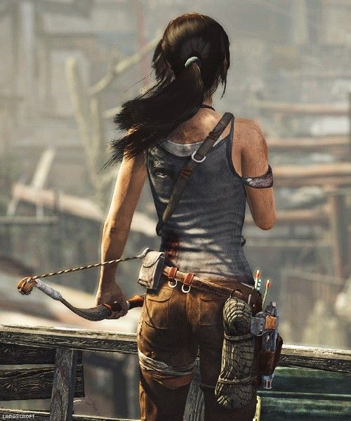
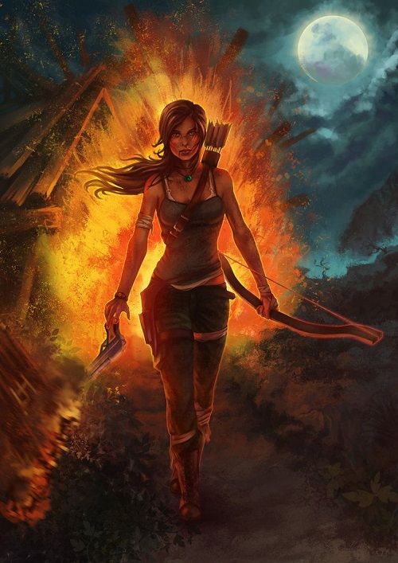

Посмотрим сможите ли вы угадать этого персонажа по затылку?
Лара Крофт — главная героиня серии компьютерных игр Tomb Raider компании Square Enix. Была придумана Тоби Гардом и впервые появилась в игре Tomb Raider, выпущенной в 1996 году. Лара Крофт считается значимым персонажем в индустрии компьютерных игр. В честь 15-летнего юбилея с момента появления первой игры Tomb Raider, в ноябре 2011 года была организована цифровая художественная выставка Лары Крофт.
Лара — это уверенный в себе, независимый и упорный человек. Она очень храбрая и редко показывает страх даже в самых опасных ситуациях. Тем не менее в разных сценариях она изображена по-разному. Традиционная одежда Лары состоит из светло-голубой майки, светло-коричневых шорт, высоких ботинок, белых носков, перчаток без пальцев, ремня с двумя кобурами, а также небольшого рюкзака. В таком виде её можно увидеть в каждой части Tomb Raider. Стандартное оружие Лары — это два пистолета, которые не идентифицируются в игре. По крайней мере, во второй и третьей частях игры это, предположительно, FN Browning Hi-Power.